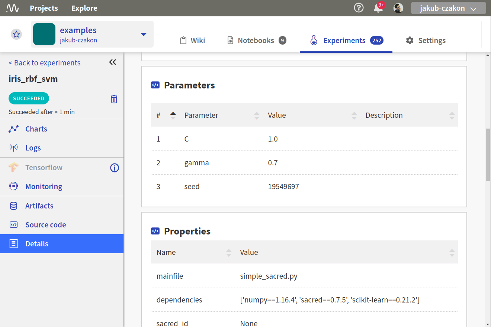

Log Sacred experiments to neptune
{kind=link}
Prerequisites
Integration with Sacred framework is introduced as a part of logging module so just need to have neptune-client installed.
pip install neptune-client neptune-contrib['monitoring']
Create an Experiment
Note
I am using a shared, anonymous token but you can change to your private NEPTUNE_API_TOKEN.
from numpy.random import permutation
from sklearn import svm, datasets
from sacred import Experiment
ex = Experiment('iris_rbf_svm')
Append NeptuneObserver
Pass the experiment object as first argument.
Note
We are using api token for the anonymous user neptuner. You can change it to your own or test it out on this public project.
from neptunecontrib.monitoring.sacred import NeptuneObserver
ex.observers.append(NeptuneObserver(api_token='ANONYMOUS',
project_name='shared/sacred-integration'))
Run normally
@ex.config
def cfg():
C = 1.0
gamma = 0.7
@ex.automain
def run(C, gamma, _run):
iris = datasets.load_iris()
per = permutation(iris.target.size)
iris.data = iris.data[per]
iris.target = iris.target[per]
clf = svm.SVC(C, 'rbf', gamma=gamma)
clf.fit(iris.data[:90],
iris.target[:90])
return clf.score(iris.data[90:],
iris.target[90:])
Monitor your Sacred experiments in Neptune
Now you can watch your Sacred experiments in Neptune!
Check out this example experiment dashboard.
{kind=link}
Full Sacred monitoring script
Simply copy and paste it to sacred_example.py and run.
Remember to change your credentials in NeptuneObserver():
ex.observers.append(NeptuneObserver(api_token='YOUR_API_TOKEN',
project_name='USER_NAME/PROJECT_NAME'))
from numpy.random import permutation
from sklearn import svm, datasets
from sacred import Experiment
from neptunecontrib.monitoring.sacred import NeptuneObserver
ex = Experiment('iris_rbf_svm')
ex.observers.append(NeptuneObserver(api_token='ANONYMOUS',
project_name='shared/sacred-integration'))
@ex.config
def cfg():
C = 1.0
gamma = 0.7
@ex.automain
def run(C, gamma, _run):
iris = datasets.load_iris()
per = permutation(iris.target.size)
iris.data = iris.data[per]
iris.target = iris.target[per]
clf = svm.SVC(C, 'rbf', gamma=gamma)
clf.fit(iris.data[:90],
iris.target[:90])
return clf.score(iris.data[90:],
iris.target[90:])